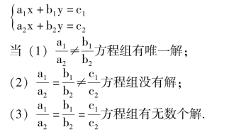

二元一次方程组
【二元一次方程】
含有两个未知数，并且含有未知数的项的次数都是1的方程叫二元一次方程.
【二元一次方程的一个解】
能使一个二元一次方程成立的每一对未知数的值，叫做这个二元一次方程的一个解.
二元一次方程有无数个解.只要给定方程中一个未知数的值，可以求出另一个未知数的值，这两个未知数的值就是二元一次方程的一个解.因而每一个二元一次方程有无数个解.
【二元一次方程的解集】
由二元一次方程的所有的解组成的集合，叫做这个二元一次方程的解集.
【二元一次方程组】
由几个方程组成的一组方程，叫做方程组.由几个一次方程组成并含有两个未知数的方程组，叫做二元一次方程组.
注意: 在中学教材中学习的方程组都是由与元的个数相同的几个方程组成的.如二元方程组中有两个方程，三元方程组有三个方程.这样可以求出它们的定解.如果方程的个数少于元的个数，方程组有不定解；而方程的个数多于元的个数，如不等价就是无解.
【方程组的解】
方程组的各个方程的公共解，叫做这个方程组的解.
【同解方程组】
如果两个方程组的解完全相同时，那么这两个方程组叫同解方程组.
【方程组的同解变形原理】
(1) 如果方程组里的任何一个方程用它的同解方程代替，则所得的新方程组与原方程组同解.
(2) 如果方程组里的一个方程是一个未知数用另一个未知数的代数式表示的形式，在方程组的另一个方程里把这个未知数换成这个代数式，则所得的新方程组与原方程组同解.
(3) 如果把方程组里的两个方程的两边分别相加或相减，得出一个新方程，并且把原方程组里的任何一个方程换成这个新的方程，那么所得的新方程组和原方程组同解.
(4) 如果方程组中的一个方程可以变成一边为零，另一边为两个(或几个) 因式的积，令这每个因式为零，所组成的新方程，分别与原方程组中的其余方程组成的两个(或几个) 新方程组，则这两个(或几个) 新方程组与原方程组同解.
【用代入消元法解二元一次方程组的步骤】
(1) 将方程组里的一个方程变形，用含有一个未知数的代数式表示另一个未知数.
(2) 用这个代数式代替另一个方程中相应的未知数，解出一个未知数的值.
(3) 把求得的一个未知数的值代入原方程组中的任意一个方程，求出另一个未知数的值.
(4) 把求得的未知数的值，并列写在一个大括号内.
说明: (1) 代入消元法简称代入法，代入法的指导思想是利用同解变形，使二元变成一元，从而求出一个未知数的值.
(2) 为了保证解的正确，可将方程组的解分别代入原方程组的每一个方程检验.
【用加减消元法解二元一次方程组的步骤】
(1) 要消去哪一个未知数，先求方程组里每个方程这个未知数的系数的最小公倍数.
(2) 每个方程的左右两边同乘以各自的补因数(最小公倍数÷原系数＝补因数)，使一个未知数的系数变成相同或相反.
(3) 将变形后的方程组中的两个方程相减(或相加)消去一个未知数，变成一元方程.
(4) 解得到的一元方程，求出一个未知数的值.
(5) 把求得的一个未知数的值代入原方程组中的任意一个方程，并求出另一个未知数的值.
(6) 把求得的两个未知数的值，并列写成方程组解的形式.
【二元一次方程组解的讨论】
